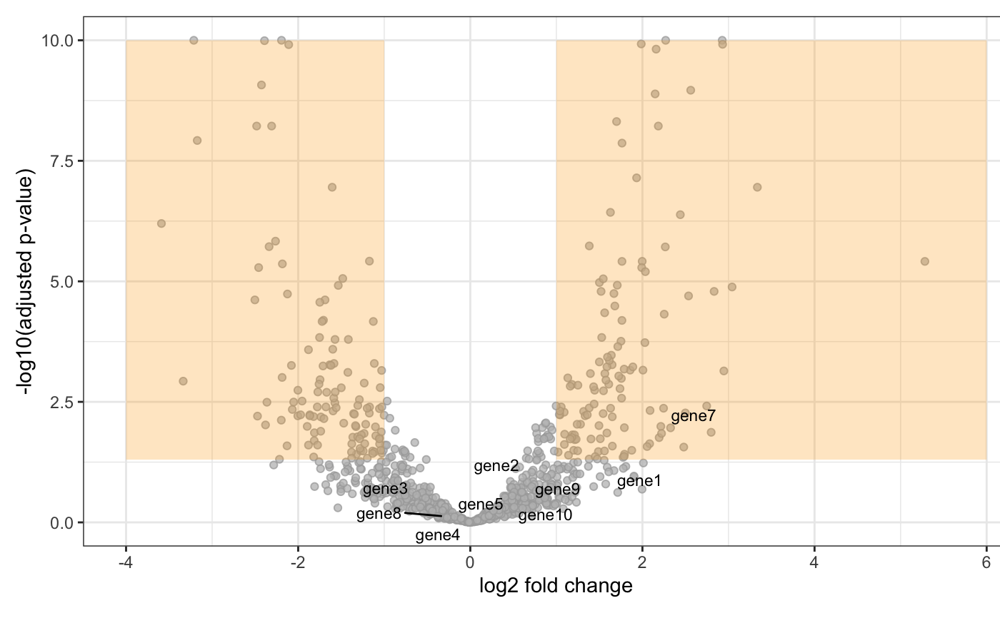

degVolcano.RdCreate volcano plot from log2FC and adjusted pvalues data frame
degVolcano(stats, side = "both", title = "Volcano Plot with Marginal Distributions", pval.cutoff = 0.05, lfc.cutoff = 1, shade.colour = "orange", shade.alpha = 0.25, point.colour = "gray", point.alpha = 0.75, point.outline.colour = "darkgray", line.colour = "gray", plot_text = NULL)
| stats | data.frame with two columns: logFC and Adjusted.Pvalue |
|---|---|
| side | plot UP, DOWN or BOTH de-regulated points |
| title | title for the figure |
| pval.cutoff | cutoff for the adjusted pvalue. Default 0.05 |
| lfc.cutoff | cutoff for the log2FC. Default 1 |
| shade.colour | background color. Default orange. |
| shade.alpha | transparency value. Default 0.25 |
| point.colour | colours for points. Default gray |
| point.alpha | transparency for points. Default 0.75 |
| point.outline.colour | Default darkgray |
| line.colour | Defaul gray |
| plot_text | data.frame with three columns: logFC, Pvalue, Gene name |
The function will plot volcano plot together with density of the fold change and p-values on the top and the right side of the volcano plot.
This function was mainly developed by @jnhutchinson.
#>#>#>#>#>#>stats <- results(dds)[,c("log2FoldChange", "padj")] stats[["name"]] <- row.names(stats) degVolcano(stats, plot_text = stats[1:10,])#> Warning: Removed 1 rows containing missing values (geom_text_repel).#> Error in grid.Call.graphics(C_setviewport, vp, TRUE): non-finite location and/or size for viewport